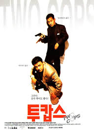

투캅스
- 감독 강우석
- 개봉년도 1993
- 상영시간 1시간 50분
- 15세 이상 관람가
- 안성기: 조윤수 형사 역 / 박중훈: 강민호 형사 역 / 지수원: 수원 역
줄거리
중앙경찰학교를 수석 졸업하고 서울 서초경찰서로 배치된 전도 유망한 신입 강민호 형사(박중훈, 이하 강 형사)는 비리 경찰로 옷을 벗은 김전문 형사(이하 김 형사)의 뒤를 이어 조윤수 형사(안성기, 이하 조 형사)의 파트너가 된다. 이후 강 형사는 급속도로 비리에 맛을 들이고, 급기야는 우연히 입수한 마약을 마약상에게 넘기려 든다. 이에 조 형사는 넘지 말아야 할 선을 넘은 강 형사와 싸우게 되는데...